Wedivo est la plateforme de gestion des agences de mariage et d’événementiel. Elle réunit au même endroit vos clients, vos devis, vos réservations de matériel, votre stock, vos finances, votre personnel et vos mariages.
Ce que Wedivo vous permet de faire
Vendre : fiches clients, catalogue de prestations, devis professionnels en PDF envoyés au client, qui les accepte en ligne, puis contrats et factures.
Louer votre matériel sans double réservation : chaque réservation bloque le matériel sur ses dates ; Wedivo vous prévient quand il en manque et propose de compléter chez vos partenaires.
Suivre la logistique : bons de sortie et de retour, casse facturée, caution, calendrier de toute l’équipe.
Piloter l’argent : encaissements, dépenses, factures, trésorerie et marge de chaque événement.
Organiser l’équipe : personnel, missions, pointage, paie et badges ; chaque membre du terrain voit ses missions sur son téléphone.
Gérer les mariages : fiches mariage, tâches, invités et billets avec QR code.
Une agence = un espace
Chaque agence a son propre espace, avec son adresse (par exemple canopy-house.wedivo.pro). Les données d’une agence ne sont jamais visibles par une autre. Une même personne peut travailler dans plusieurs espaces : elle passe de l’un à l’autre avec le sélecteur en haut du menu.
Les rôles
Chaque personne de l’équipe a un rôle. Le rôle décide de ce qu’elle voit et de ce qu’elle peut faire. Le détail complet est dans l’annexe en fin de manuel.
Rôle
Pour qui
Ce qu’il voit
Propriétaire
Le dirigeant de l’agence
Tout, y compris les paramètres, l’équipe, les coûts et les marges.
Wedding planner
Les chargés de projet
Clients, devis, réservations, calendrier, mariages, personnel ; les soldes des clients, mais ni marges ni dépenses.
Assistant
L’aide administrative
Clients, devis, réservations et mariages, sans aucun montant.
Comptable
La gestion financière
Finances, factures, rapports, paie, coûts et marges.
Magasinier
Le responsable du dépôt
Stock, mouvements, réservations et calendrier, sans aucun montant.
Chef d’équipe
Le responsable sur le terrain
Son espace et ses missions, le pointage de son équipe.
Personnel
Serveurs, installateurs, chauffeurs…
Son espace et ses missions sur son téléphone.
Bon à savoirLes montants que votre rôle ne doit pas voir ne sont jamais envoyés à votre écran : ils sont retirés par le serveur, pas seulement cachés.
Se repérer dans l’écran
Le menu à gauche regroupe les modules : Pilotage, Activité, Matériel, Finances, Équipe, Événementiel, Espace. Il ne montre que ce que votre rôle peut ouvrir.
La barre de recherche en haut (ou Ctrl + K) retrouve un client, un devis ou une page en quelques lettres.
La cloche ouvre les alertes : échéances en retard, stock bas, maintenance, tâches en retard…
La lune / le soleil passe en mode sombre ou clair.
Sur téléphone, le menu s’ouvre avec le bouton en haut à gauche, et une barre d’onglets en bas donne l’accès rapide à l’Accueil, aux Réservations, au Stock et aux Finances.
CHAPITRE 2Démarrer : compte, connexion, profil
Créer l’espace de votre agence
Sur la page de connexion, cliquez sur Créer un compte. L’inscription se fait en trois étapes :
Entreprise : nom de l’agence, ville, pays (le Cameroun est proposé par défaut) et nombre de mariages organisés par an. Le pays règle automatiquement la monnaie (franc CFA) et le fuseau horaire.
Votre compte : nom complet, email, téléphone WhatsApp (avec l’indicatif, par exemple +237 6 99 12 34 56) et mot de passe de 8 caractères minimum.
Votre espace : l’adresse de votre espace, proposée à partir du nom de l’agence. Wedivo vérifie en direct qu’elle est libre.
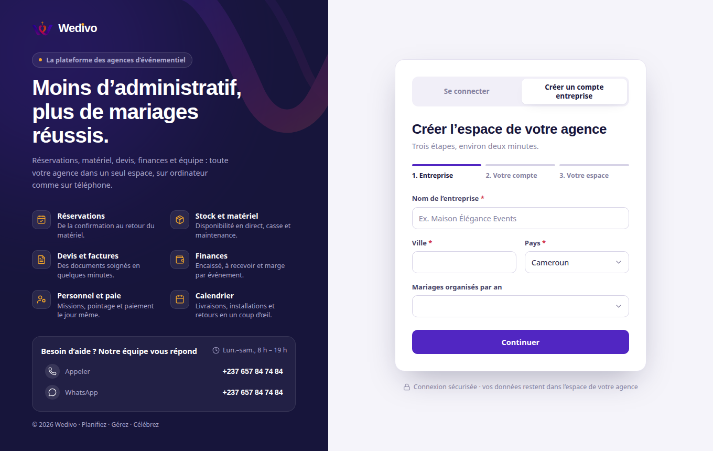
L’inscription en trois étapes.
Toutes les fonctionnalités sont inclusesAucun moyen de paiement n’est demandé. Les abonnements arriveront avec une prochaine mise à jour.
Se connecter
Saisissez votre email et votre mot de passe, puis Se connecter. La session reste ouverte plusieurs jours sur cet appareil.
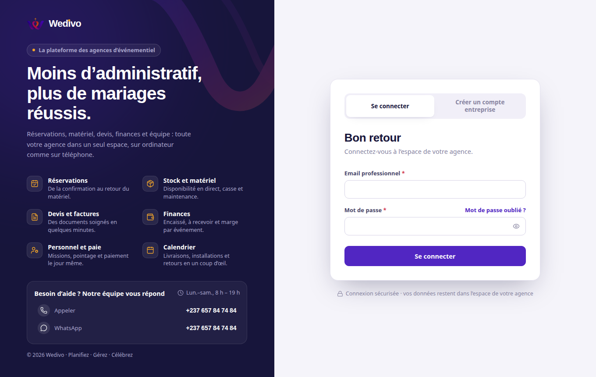
La page de connexion.
Mot de passe oublié : cliquez sur Mot de passe oublié, saisissez votre email ; vous recevez un lien pour en choisir un nouveau.
Mot de passe provisoire : si le propriétaire vous a créé un compte, il vous transmet un mot de passe provisoire. À la première connexion, Wedivo vous demande d’en choisir un à vous avant d’ouvrir le reste.
Le site doit être en httpsSi l’adresse ne commence pas par « https:// », votre navigateur ne garde pas la session et vous renvoie à la connexion.
Mon profil
Cliquez sur votre nom en bas du menu. Vous pouvez y changer votre nom, votre téléphone et votre mot de passe (l’actuel est demandé d’abord), et voir les espaces auxquels vous avez accès.
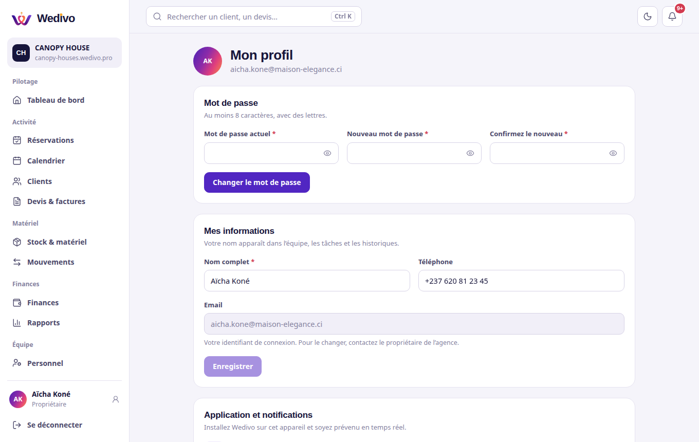
Mon profil.
Installer Wedivo sur le téléphone et recevoir les notifications
Dans Mon profil › Application et notifications :
Installer l’application ajoute une icône Wedivo sur l’écran d’accueil : l’application s’ouvre en plein écran, comme une application classique.
Activer les notifications vous prévient en temps réel : nouvelle mission ou tâche, tâche à reprendre ou à valider, paiement reçu, alerte urgente (selon votre rôle).
CHAPITRE 3Le tableau de bord
C’est la première page après la connexion. Elle résume la journée et la période : ce qui est encaissé, ce qui est dû, ce qui part et revient, qui travaille aujourd’hui et ce qui demande votre attention.
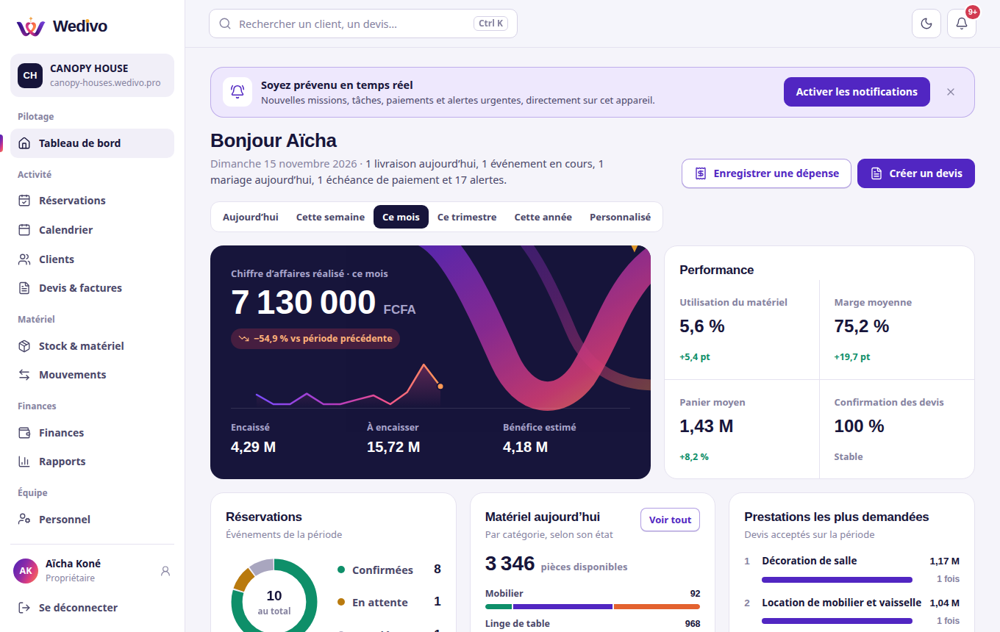
Le tableau de bord du propriétaire.
Choisir la période : aujourd’hui, cette semaine, ce mois, ce trimestre, cette année ou une période personnalisée.
Les chiffres clés : chiffre d’affaires, encaissements, soldes à recevoir, dépenses et marge (selon votre rôle).
Les blocs du jour : livraisons et retours, équipe du jour et pointage, matériel à surveiller, alertes.
Les actions rapides : Nouveau devis, Nouvelle dépense.
Chaque rôle voit son propre tableau de bord : l’assistant n’y voit aucun montant, le planner n’y voit ni marges ni dépenses. Le personnel et les chefs d’équipe voient à la place Mon espace (chapitre 11).
CHAPITRE 4Les clients
Une fiche par client : coordonnées, préférences, et tout ce qu’il vous a commandé.
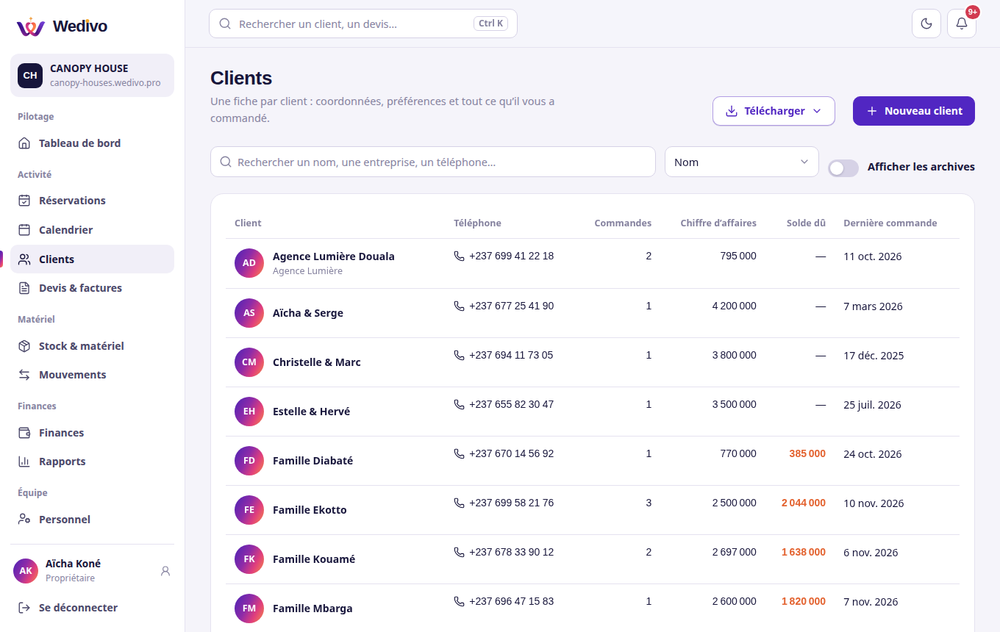
La liste des clients.
Créer un client
Cliquez sur Nouveau client.
Renseignez le nom (un couple, une famille ou une entreprise), le téléphone, l’email, l’adresse, les préférences et les notes.
Enregistrez : la fiche apparaît dans la liste.
Retrouver et suivre un client
La recherche trouve un client par nom, entreprise, téléphone ou email.
Le tri classe par nom, chiffre d’affaires, solde dû ou dernière commande.
Cliquez sur un client pour ouvrir sa fiche : coordonnées, historique des devis, contrats, réservations et paiements, et ce qu’il doit encore.
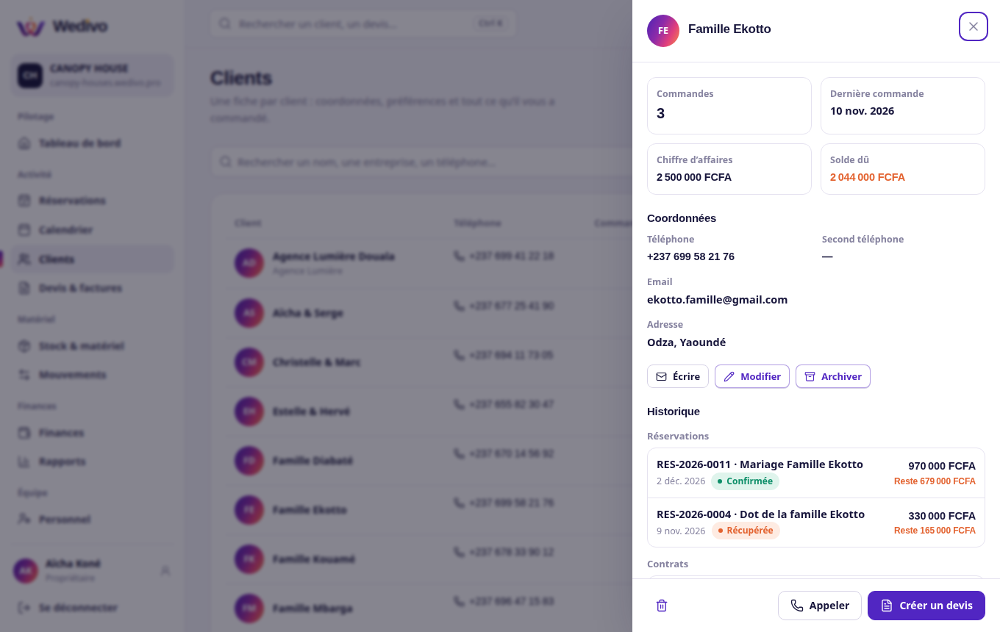
La fiche d’un client et son historique.
Archiver retire un client de la liste sans perdre son historique ; Afficher les archives le retrouve et Sortir des archives le remet en service.
Télécharger exporte la liste en Excel ou CSV.
CHAPITRE 5Devis, contrats et factures
Le devis est la base de la vente : vous choisissez les prestations du catalogue, Wedivo calcule les montants, met en page un PDF à vos couleurs et l’envoie au client, qui l’accepte en ligne.
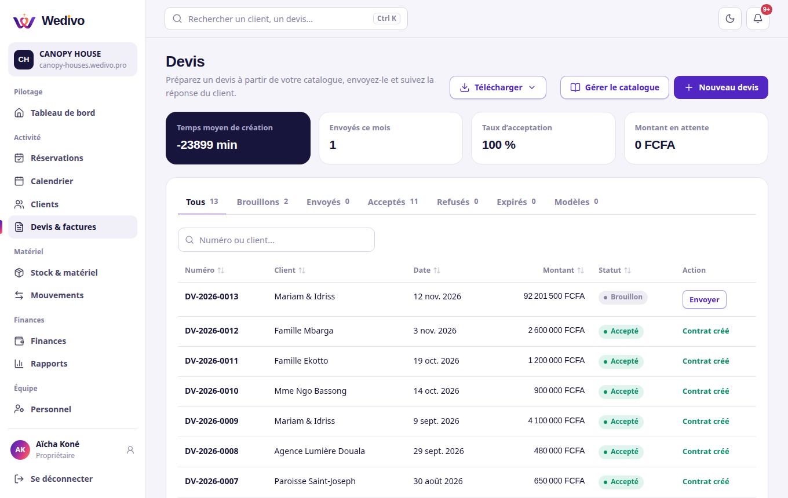
Les devis, classés par statut.
Créer et envoyer un devis
Ouvrez Devis & factures puis Nouveau devis.
Choisissez le client, la date du mariage, le lieu et le nombre d’invités.
Ajoutez les prestations depuis le catalogue (bouton Ajouter) ; ajustez les quantités et les prix si besoin. La remise et l’acompte se calculent tout seuls.
À droite, l’aperçu du PDF se met à jour en direct. Choisissez le modèle (A Prestige, B Élégance, C Classique, D Partenariat) et la palette de couleurs.
Enregistrer le brouillon pour y revenir plus tard, ou Envoyer le devis : le client reçoit un email avec le PDF et un lien pour l’accepter.
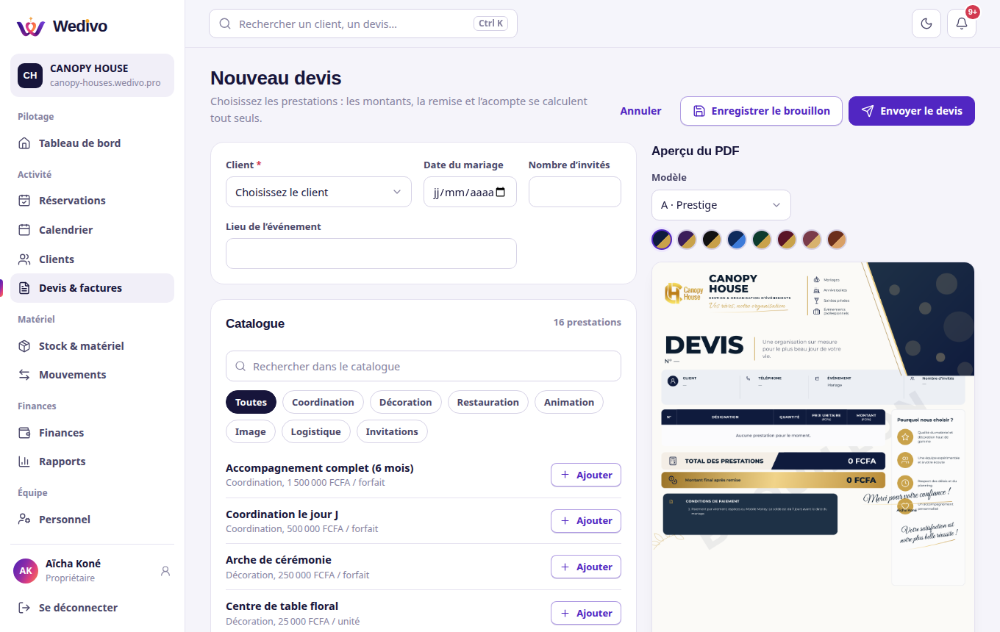
L’éditeur de devis et son aperçu PDF en direct.
Le parcours d’un devis
Statut
Ce que cela veut dire
Brouillon
En préparation, pas encore envoyé.
Envoyé
Le client a reçu le devis et peut l’accepter ou le refuser en ligne.
Accepté
Le client a accepté : vous pouvez le convertir en contrat.
Refusé
Le client a décliné ; l’agence en est informée.
Expiré
La date de validité est passée (30 jours par défaut, réglable dans les paramètres).
Du devis au contrat
Sur un devis accepté, cliquez sur Convertir en contrat. Wedivo crée en une fois :
le contrat et son échéancier : un acompte dû aujourd’hui, puis le solde dû 7 jours avant le mariage ;
la fiche mariage ;
le client passe en « Client confirmé ».
Factures et avoirs
Dans Finances › Factures, une réservation peut recevoir une facture d’acompte puis une facture finale. Les numéros se suivent sans trou (FA-2026-0001…). Un avoir corrige une facture ; à l’annulation d’une réservation, les avoirs sont créés automatiquement.
Le catalogue des prestations
Le catalogue (Paramètres › Catalogue) contient vos prestations et leurs prix, rangées par catégorie : coordination, décoration, restauration, animation, image, logistique, invitations… C’est la base de chaque devis.
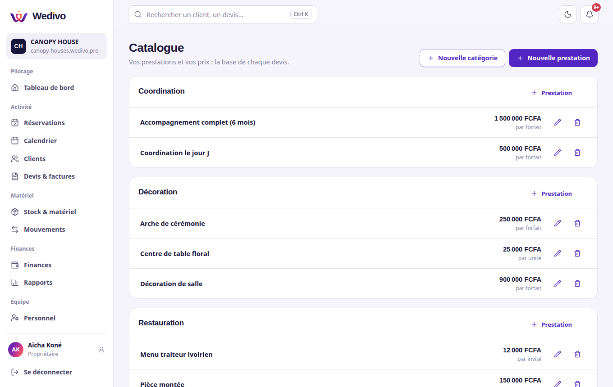
Le catalogue des prestations.
CHAPITRE 6Les réservations
Une réservation, c’est une commande de matériel et de prestations pour un événement, suivie de la confirmation jusqu’au retour du matériel au dépôt.
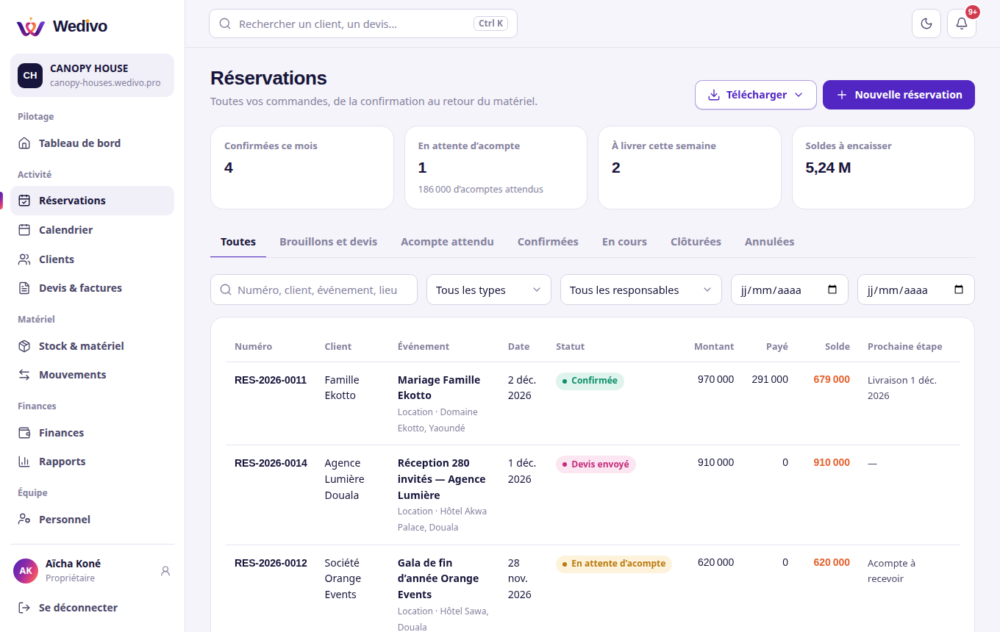
La liste des réservations, par onglets de statut.
Créer une réservation
Cliquez sur Nouvelle réservation. L’assistant comporte cinq étapes :
Client et événement : client (ou création d’un nouveau client), titre, type (location, prestation…), nombre d’invités, lieu, adresse, responsable et fiche mariage liée.
Dates logistiques : livraison, installation, début et fin de l’événement, récupération, retour au dépôt.
Matériel : articles et packs. Wedivo montre en direct ce qui est disponible sur ces dates. S’il en manque, la ligne passe en rouge et propose des articles équivalents… ou un partenaire.
Prestations : les services du catalogue à ajouter.
Récapitulatif : remise, transport, installation, acompte demandé, total. Enregistrez le brouillon ou Enregistrer et confirmer.
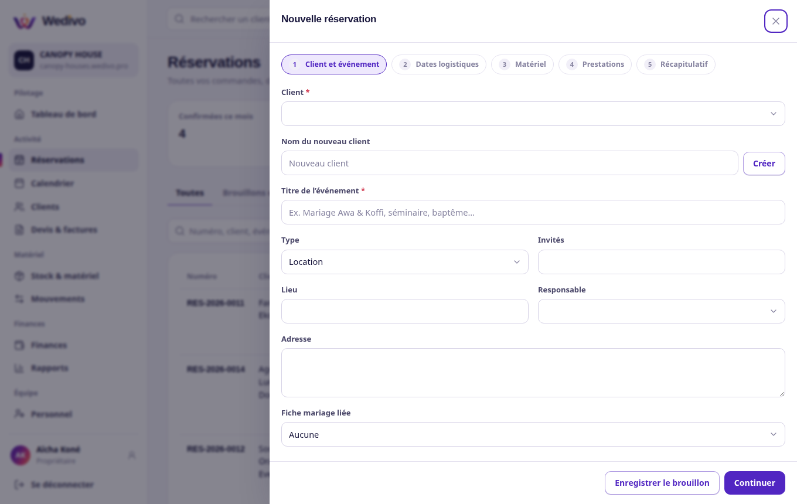
L’assistant de réservation en cinq étapes.
Les statuts d’une réservation
Statut
Ce qui se passe
Brouillon / Devis envoyé
Rien n’est encore bloqué dans le stock.
En attente d’acompte
Le matériel est bloqué ; l’acompte n’est pas encore payé.
Confirmée
L’acompte est reçu : le matériel est réservé pour ces dates.
En préparation
Le dépôt prépare le matériel.
Livrée, Installée, En cours, Récupérée
Le matériel est sorti du dépôt et sur l’événement.
Clôturée
Le matériel est revenu, le retour est saisi.
Annulée
La réservation est annulée ; le matériel est libéré.
Jamais de double réservationÀ la confirmation, Wedivo vérifie le stock en bloquant les articles concernés : deux réservations confirmées en même temps ne peuvent jamais dépasser ce que vous avez.
La fiche d’une réservation
Cliquez sur une réservation pour ouvrir sa fiche : étapes et dates, commande, total et solde, paiements, caution, documents, équipe affectée, factures et historique.
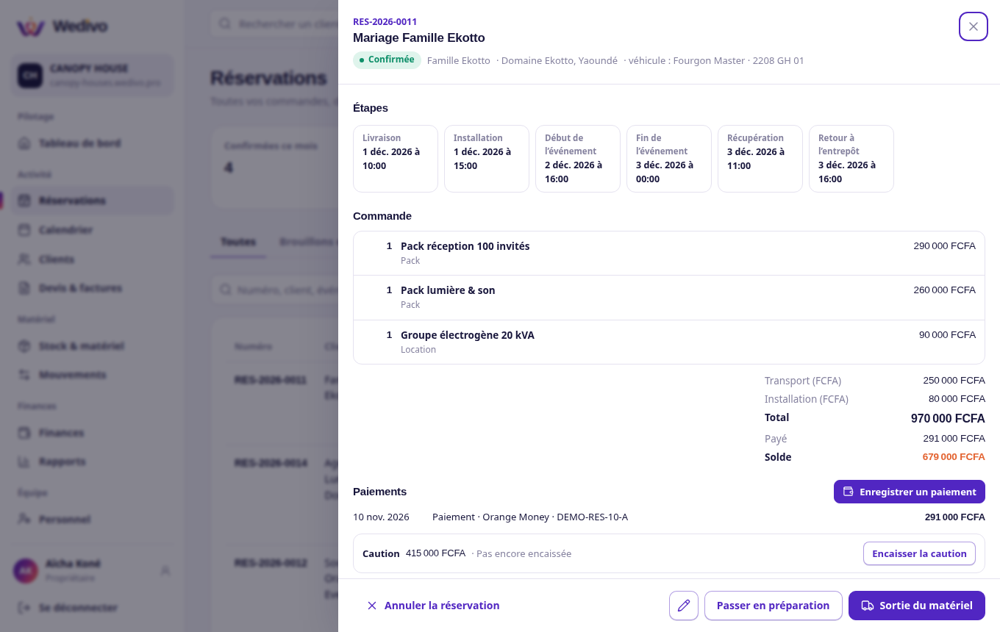
La fiche d’une réservation confirmée.
Encaisser
Enregistrer un paiement : montant, mode (espèces, Orange Money, MTN MoMo, virement…), référence. Le solde se met à jour, et la réservation passe en « Confirmée » quand l’acompte est atteint.
Encaisser la caution au départ du matériel ; après le retour, Solder la caution la rend, en tout ou en partie.
Faire partir et revenir le matériel
Passer en préparation quand le dépôt prépare la commande.
Sortie du matériel : indiquez les quantités chargées. Imprimez le bon de sortie (rubrique Documents) pour le chauffeur.
Faites avancer les étapes : livrée, installée, en cours, récupérée.
Retour du matériel : comptez, pour chaque ligne, les pièces rendues, abîmées et manquantes. La casse et les pertes sont ajoutées automatiquement à la facture au prix de remplacement, et le stock est mis à jour. Le bon de retour se télécharge ensuite.
Modifier, déplacer, annuler
Le crayon rouvre l’assistant pour modifier la réservation ; le stock est revérifié.
Dans le calendrier, on peut glisser une réservation à une autre date : le déplacement est refusé si le matériel n’est pas libre.
Annuler la réservation libère le matériel ; l’acompte reçu est gardé par l’agence (réglable dans les paramètres).
Compléter une réservation chez un partenaire
Quand votre stock ne suffit pas sur la période (par exemple 650 housses demandées, 498 libres chez vous), la fiche de la réservation affiche « Compléter chez un partenaire » :
Wedivo liste les partenaires qui prêtent cet article et combien ils peuvent encore en prêter sur ces dates.
Indiquez la quantité et cliquez sur Prendre chez ….
La ligne affiche alors « dont 150 chez Déco Prestige Douala ». Seule votre part sortira de votre dépôt ; le partenaire livre la sienne.
Un bon de commande partenaire en PDF est prêt à lui envoyer, avec les quantités, les dates et l’adresse de l’événement.
La marge reste justeLe prix facturé par le partenaire est déduit automatiquement de la marge de la réservation (Finances › Rentabilité). Ce prix n’est visible que du propriétaire et du comptable.
Pour tout reprendre de votre stock, cliquez sur Tout reprendre de notre stock.
CHAPITRE 7Le calendrier
Toute l’activité de l’agence sur une même vue : événements, livraisons, installations, récupérations, retours, maintenance, tâches et paiements attendus.
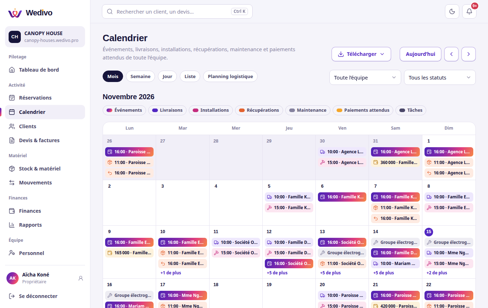
Le calendrier de l’équipe.
Passez du mois à la semaine, au jour ou au planning logistique (par véhicule et par équipe).
Filtrez par type d’étape, par statut ou par membre de l’équipe.
Cliquez sur un élément pour ouvrir la réservation ou le mariage correspondant.
Glissez une réservation pour la déplacer ; toutes ses dates suivent, et l’équipe affectée aussi.
CHAPITRE 8Le stock et le matériel
Votre matériel, sa disponibilité jour par jour, son état, et celui que vos partenaires peuvent vous prêter.
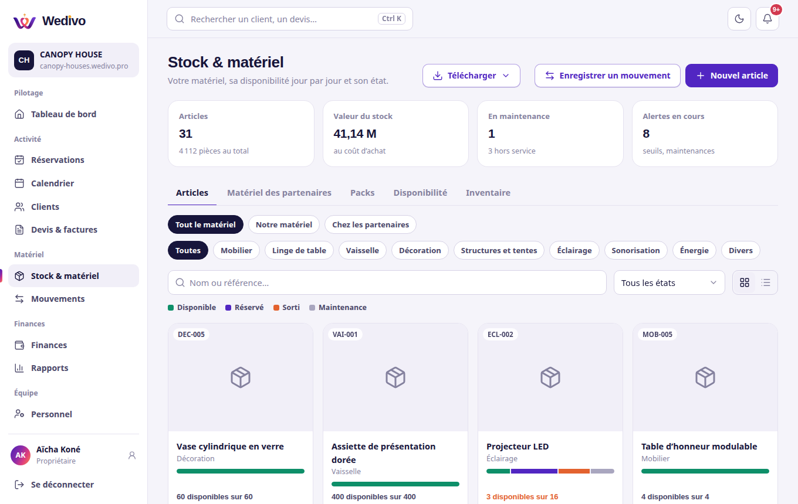
Les articles du stock, avec leur disponibilité du jour.
Les articles
Nouvel article : nom, catégorie (mobilier, linge de table, vaisselle, décoration, sonorisation…), prix de location (par événement ou par jour), prix de vente, caution, coût d’achat, emplacement au dépôt, seuil d’alerte et quantité en stock.
Un article se suit par quantité (200 chaises) ou par unité (chaque groupe électrogène avec son numéro de série).
La barre colorée montre l’état du jour : disponible, réservé, sorti, en maintenance.
Le filtre Notre matériel / Chez les partenaires sépare vos deux listes ; un article complété par des partenaires affiche « +300 chez partenaires ».
Cliquez sur un article pour sa fiche : photo, historique des mouvements, maintenance, étiquettes à imprimer.
Les mouvements
Mouvement de stock enregistre un achat, une vente, une casse, une perte ou un ajustement. Les sorties et retours des réservations sont enregistrés automatiquement. Le journal complet est dans Mouvements ; un mouvement erroné peut être annulé.
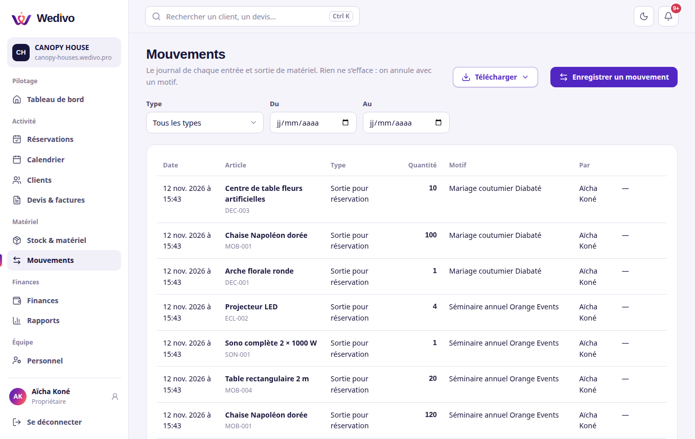
Le journal des mouvements de stock.
Packs, disponibilité, maintenance et inventaire
Packs : un ensemble d’articles vendu d’un bloc (par exemple « Pack réception 100 invités »). Sa disponibilité suit l’article le plus rare.
Disponibilité : une grille sur 30 jours, article par article, pour voir d’un coup d’œil quand le matériel est libre.
Maintenance : envoyez un article en réparation ; il n’est plus proposé jusqu’à son retour.
Inventaire : comptez le stock réel ; à la validation, les écarts deviennent des ajustements tracés.
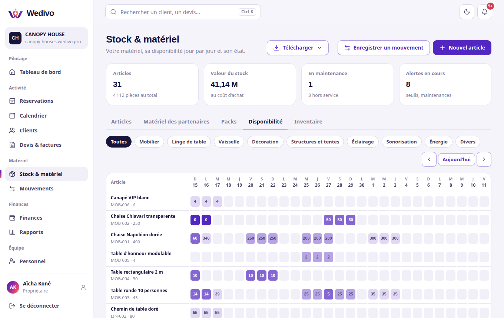
La disponibilité jour par jour.
Le matériel des partenaires
L’onglet Stock › Matériel des partenaires liste, partenaire par partenaire, ce que chacun peut vous prêter : l’article, la quantité qu’il peut prêter pour un événement, le prix qu’il vous facture par unité, et ce que vous en avez vous-mêmes (« À nous : 400 »).
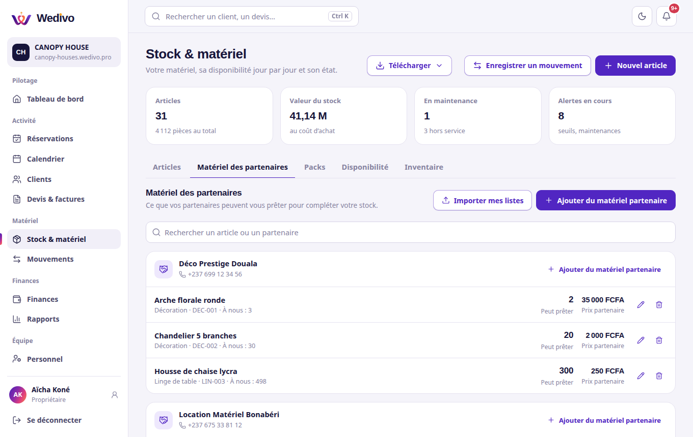
Le matériel des partenaires, regroupé par partenaire.
Ajouter du matériel partenaire : choisissez le partenaire, puis un article de votre stock ou un nouvel article que vous n’avez pas (une tente de réception, par exemple), la quantité et le prix.
Un même article peut être à vous et chez un ou plusieurs partenaires.
Le crayon modifie une offre, la corbeille la retire. Une offre déjà utilisée dans une réservation est désactivée plutôt que supprimée, pour garder l’historique.
Importer vos listes de matériel
Pour saisir d’un coup vos quantités exactes, utilisez Importer mes listes (propriétaire uniquement) :
Cliquez sur Télécharger le modèle Excel.
Remplissez une ligne par article. Colonne Type : « Interne » pour votre matériel, « Partenaire » pour celui d’un partenaire. Puis : Article, Catégorie, Quantité, Prix location, Caution, Coût achat, et pour les partenaires : Partenaire, Téléphone, Prix partenaire.
Choisissez le fichier (.xlsx ou .csv) et cliquez sur Vérifier le fichier : Wedivo montre ce qui sera créé ou modifié, sans rien enregistrer.
Si tout est bon, cliquez sur Importer.
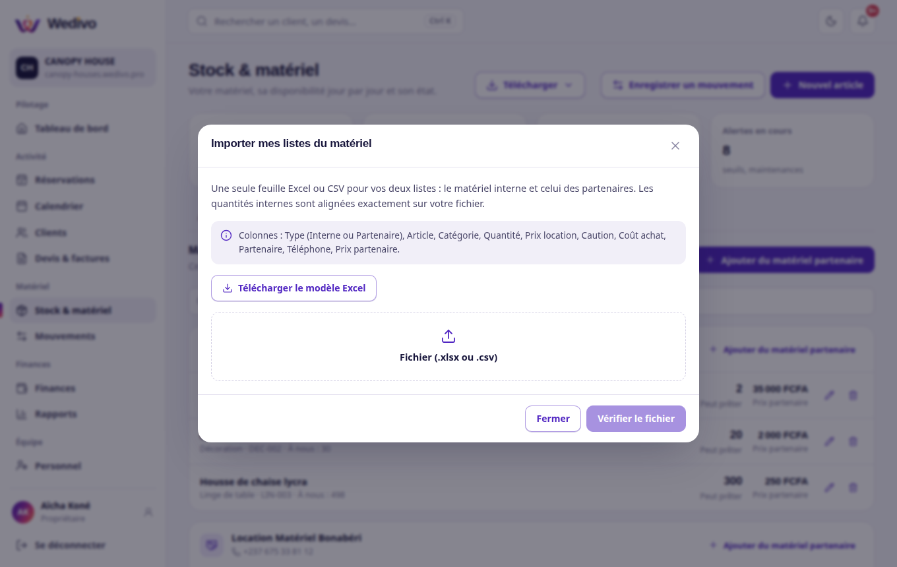
L’import des deux listes, avec vérification préalable.
Tout ou rienSi une seule ligne est incorrecte (une quantité illisible, par exemple), rien n’est enregistré et la liste des lignes à corriger s’affiche. Les quantités de votre matériel sont alignées exactement sur le fichier ; chaque écart est tracé dans les mouvements. Les partenaires inconnus sont créés dans l’annuaire.
CHAPITRE 9Finances et rapports
Ce que vos clients vous doivent, ce que vous devez à vos fournisseurs et partenaires, et la marge de chaque événement.
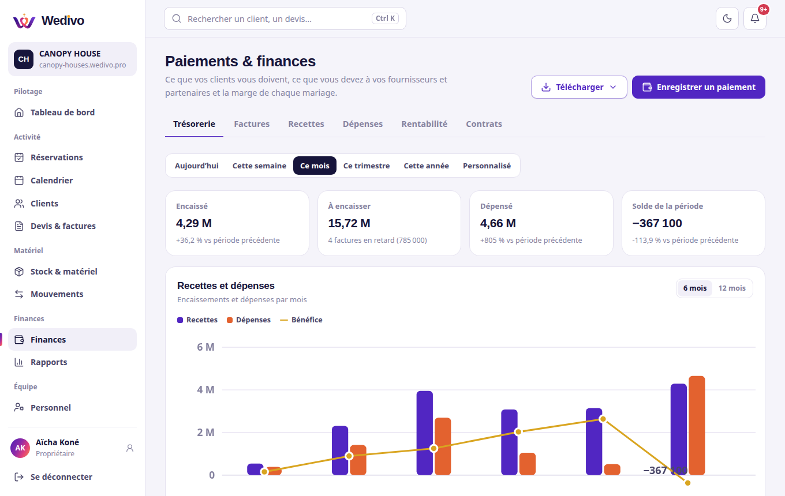
Le module Finances.
Onglet
Contenu
Trésorerie
Entrées et sorties d’argent, solde, ce qui est attendu dans les prochaines semaines.
Factures
Factures d’acompte et finales, avoirs, statut (payée, partielle, en retard), PDF.
Recettes
Tous les encaissements, par mode de paiement.
Dépenses
Achats, transport, salaires, sous-traitance… avec photo du justificatif et lien facultatif vers une réservation.
Rentabilité
Par événement : recettes moins coûts directs (personnel, partenaires, dépenses liées) = marge, en montant et en %.
Enregistrer une dépense
Depuis le tableau de bord ou Finances › Dépenses, cliquez sur Nouvelle dépense.
Libellé, montant, catégorie, date, fournisseur, mode de paiement ; rattachez-la si besoin à une réservation ou à un mariage.
Ajoutez la photo du justificatif et enregistrez.
Les rapports
Rapports (propriétaire et comptable) présente vos chiffres sur la période de votre choix, comparés à la période précédente : chiffre d’affaires par mois et par catégorie, activités les plus rentables, prestations les plus demandées, articles les plus loués, clients principaux, dépenses par catégorie, marge par événement, soldes impayés. Chaque rapport se télécharge en PDF ou en Excel.
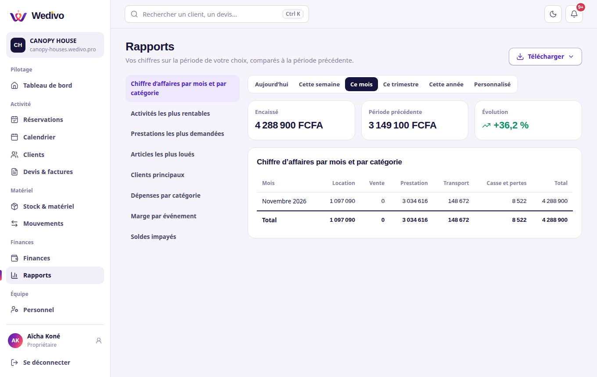
Les rapports, avec comparaison à la période précédente.
CHAPITRE 10Le personnel, les présences et la paie
Votre équipe, sa disponibilité du jour, ses missions, son pointage et sa paie.
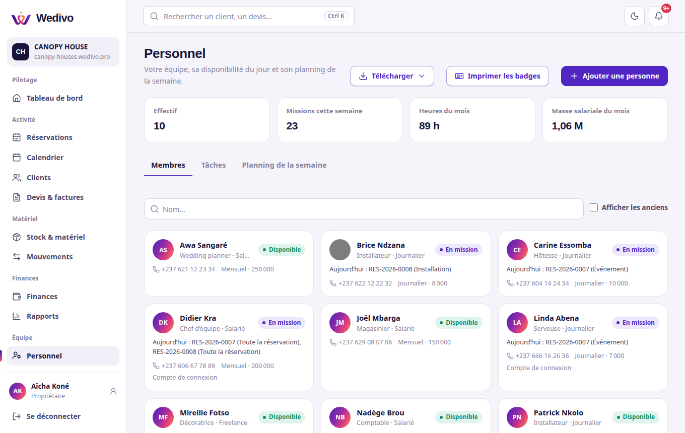
Le personnel et sa disponibilité du jour.
Ajouter une personne
Dans Personnel, cliquez sur Ajouter une personne.
Nom, poste (chef d’équipe, magasinier, chauffeur, installateur, décorateur, serveur, hôtesse…), département, type (salarié, journalier, freelance), téléphone, numéro Mobile Money, compétences, contact d’urgence.
Rémunération (propriétaire et comptable) : mensuelle, journalière, à la mission ou à l’heure, avec le taux.
Photo : Choisir une photo dans la galerie ou Prendre une photo avec l’appareil. Wedivo la remet à l’endroit, l’allège et la recadre en carré sur le visage : elle s’intègre directement à la fiche et aux badges.
Enregistrez : un matricule est attribué automatiquement.
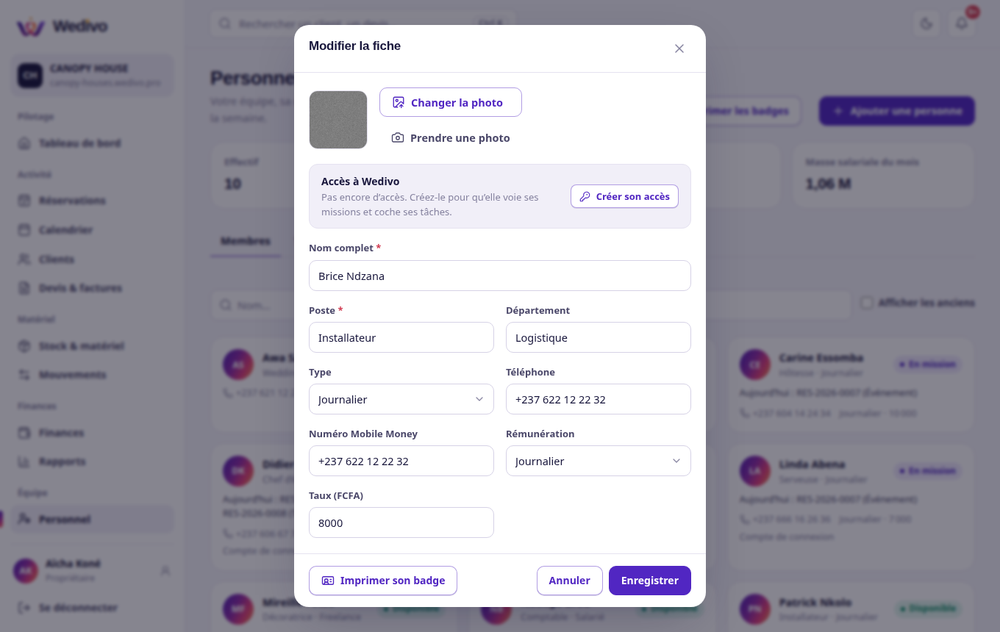
La fiche d’une personne, avec sa photo.
Créer son accès (propriétaire) ouvre un compte Wedivo à la personne pour qu’elle voie ses missions sur son téléphone. Un message tout prêt avec ses accès se copie ou s’envoie par WhatsApp.
Imprimer les badges génère les badges de l’équipe avec photo, nom et poste.
Affecter l’équipe aux événements
Dans la fiche d’une réservation, rubrique Équipe, affectez des personnes à une étape (livraison, installation, événement, récupération…) avec leur rôle. Wedivo signale les conflits d’horaire. La personne reçoit une notification et retrouve la mission dans « Mes missions ».
Les tâches
Tâches regroupe les tâches de l’équipe avec leur statut. La personne coche sa tâche faite (avec photo de fin d’installation si besoin) ; le propriétaire ou le planner la valide ou la renvoie avec un motif.
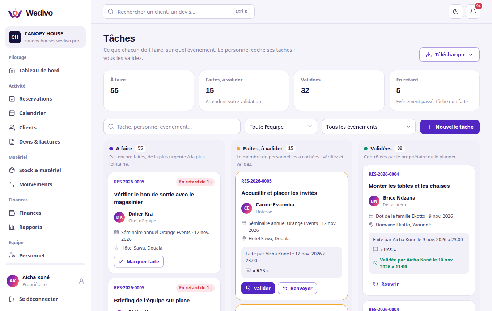
Les tâches de l’équipe.
Les présences
Présences montre le pointage du jour : arrivée, départ, heures, retard (au-delà de 15 minutes) ou absence. Le propriétaire et le planner pointent pour tous, le chef d’équipe pour son équipe, le personnel pour lui-même.
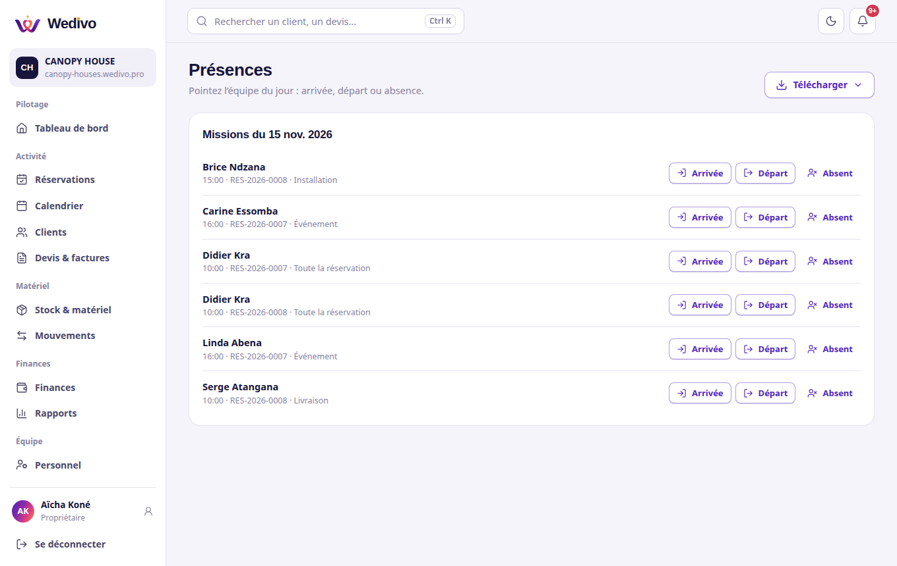
Le pointage du jour.
La paie
Paie (propriétaire et comptable) : payez la journée des journaliers, calculez les salaires du mois à partir des heures pointées et des missions, ajoutez primes et avances, validez la période, marquez les lignes payées et téléchargez les bulletins.
Payer la journée et la feuille de paie du jour
Dans Paie › Payer la journée, choisissez le jour et, si besoin, l’événement.
Wedivo liste les personnes qui ont travaillé, avec le montant proposé selon leur taux et leur pointage. Cochez, ajustez, choisissez le mode (MTN MoMo, Orange Money, espèces, virement) et cliquez sur Payer.
Cliquez sur Feuille de paie du jour (PDF) : une feuille récapitulative avec chaque personne payée, son événement, ses heures, le mode de paiement, le montant, une colonne de signature et le total. Faites signer chaque personne en face de son montant.
Jamais payé deux foisChaque paiement du jour crée sa dépense « Salaires et journaliers » et est déduit automatiquement de la paie du mois.
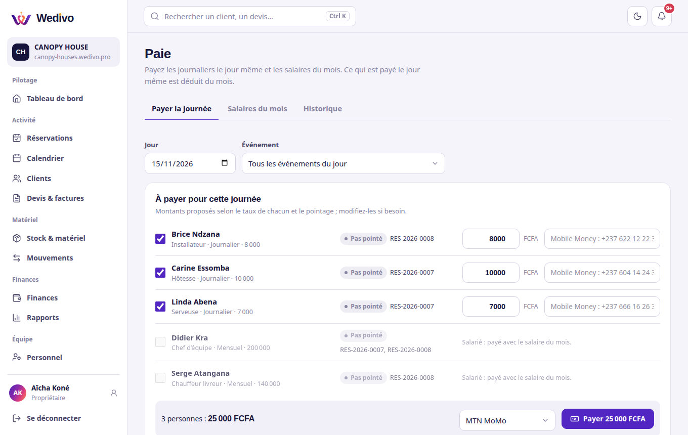
La paie du personnel.
CHAPITRE 11Sur le terrain : Mon espace et Mes missions
Le personnel et les chefs d’équipe utilisent Wedivo sur leur téléphone. Ils ne voient jamais de montant.
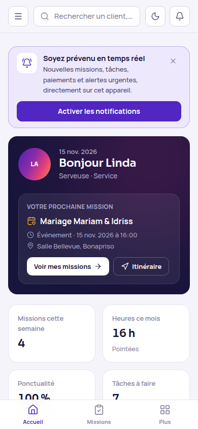
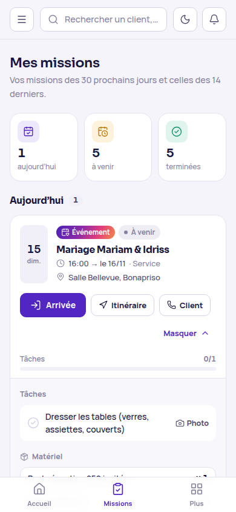
À gauche : Mon espace. À droite : Mes missions.
Mon espace
La page d’accueil du personnel : prochaine mission avec l’itinéraire, missions de la semaine et du mois, heures pointées, ponctualité, tâches à faire et faites. Le chef d’équipe y voit aussi son équipe du jour et peut la pointer sur place.
Mes missions
Les missions sont classées : aujourd’hui, demain, cette semaine, plus tard, terminées. Chaque carte montre l’étape, l’adresse avec un lien Google Maps, le client, le matériel (sans prix), les tâches et l’équipe. La personne pointe son arrivée et son départ, et coche ses tâches avec une photo si demandé.
ConseilInstallez l’application et activez les notifications (Mon profil) : chaque nouvelle mission ou tâche arrive directement sur le téléphone.
CHAPITRE 12Mariages, billets et invités
Une fiche par mariage : client, budget, partenaires, fournisseurs, tâches de l’équipe, invités et billets.
Module à activerLe module Mariages s’active dans Paramètres › Entreprise (ou à l’inscription en cochant « J’organise des mariages »).
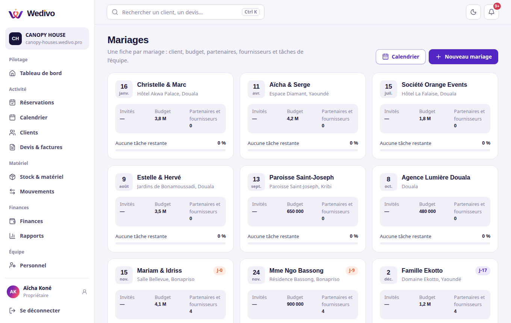
Les mariages de l’agence.
La fiche mariage
Créée automatiquement à la conversion d’un devis en contrat, ou avec Nouveau mariage. Elle regroupe le couple, la date, le lieu, le budget, les fournisseurs réservés et les tâches standard (choisies selon le délai avant le mariage).
Billets et invités
Depuis le mariage, ouvrez Billets.
Ajoutez les invités un par un, ou importez une liste (.csv ou .xlsx) : nom ou famille, nombre de places, catégorie, table.
Générer tous les billets : chaque invité reçoit un billet personnalisé avec un QR code unique et sécurisé.
Envoyez le lien du billet par WhatsApp (message tout prêt) : l’invité l’ouvre, confirme sa présence et le présente le jour J.
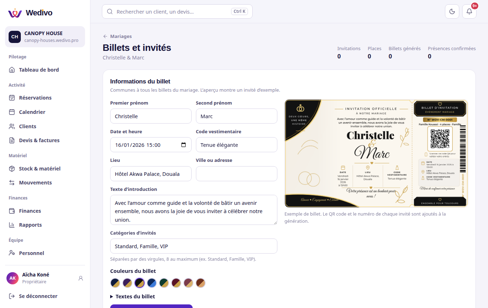
Les billets et invités d’un mariage.
Un billet annulé est refusé à l’entrée ; un billet réémis reçoit un nouveau numéro et un nouveau QR code.
CHAPITRE 13Partenaires et fournisseurs
Votre carnet d’adresses de confiance, avec l’historique des collaborations et les montants dus.
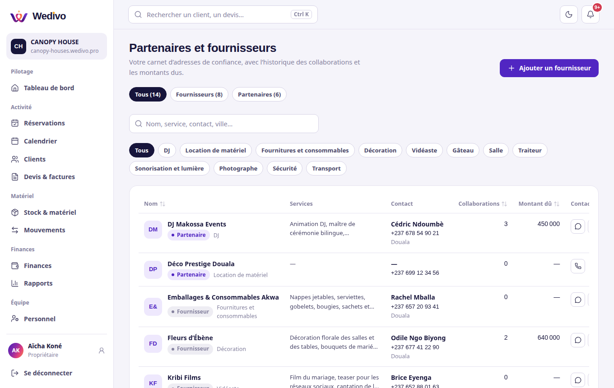
L’annuaire des partenaires et fournisseurs.
Un fournisseur vend à l’agence : fleurs, traiteur, gâteau, photo… Un partenaire travaille avec elle ou complète son matériel.
La fiche contient le contact, WhatsApp, l’adresse, le NIU et le RCCM, les conditions de paiement, le Mobile Money, la banque et les services proposés.
Sur un mariage, réservez un fournisseur avec son coût : Wedivo suit ce qui est payé et ce qui reste dû.
Pour le matériel qu’un partenaire peut prêter, voir le chapitre 8, « Le matériel des partenaires ».
CHAPITRE 14Les paramètres de l’agence
Réservés au propriétaire, ils règlent l’identité de l’agence, son équipe et ses documents.
Entreprise
Nom, adresse de l’espace, ville, pays, monnaie, fuseau horaire, préfixe et durée de validité des devis, mentions légales, politique d’annulation (acompte gardé ou non), résumé quotidien des alertes par email, activation du module Mariages.
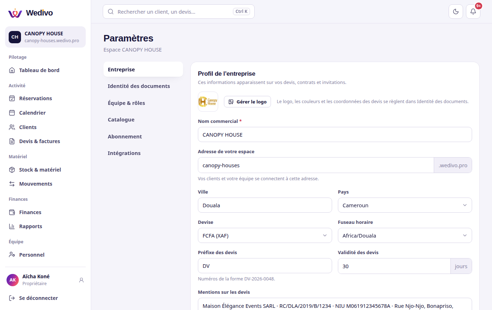
Paramètres › Entreprise.
Identité des documents
Votre logo, vos couleurs, votre signature et votre cachet, ainsi que le modèle de devis par défaut. Wedivo propose des couleurs tirées du logo et vérifie qu’elles restent lisibles. Tous les PDF (devis, factures, billets, bons) prennent cette identité.
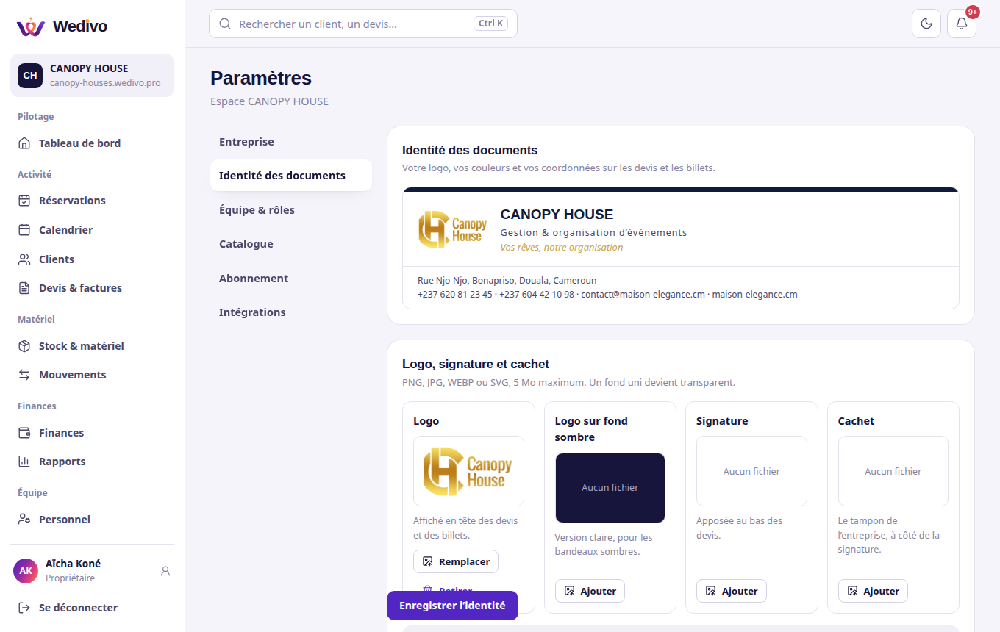
Paramètres › Identité des documents.
Équipe et rôles
Créer un compte : nom, email, téléphone, rôle et mot de passe provisoire. Wedivo prépare un message avec les accès, à copier ou à envoyer par WhatsApp. La personne choisit son propre mot de passe à la première connexion.
Inviter un membre : la personne reçoit un email avec un lien pour rejoindre l’espace.
Changer le rôle d’un membre, lui donner un Nouveau mot de passe provisoire, ou le Désactiver (il ne peut plus entrer ; on peut le réactiver).
Le tableau « Ce que chaque rôle peut faire » rappelle les droits de chacun.
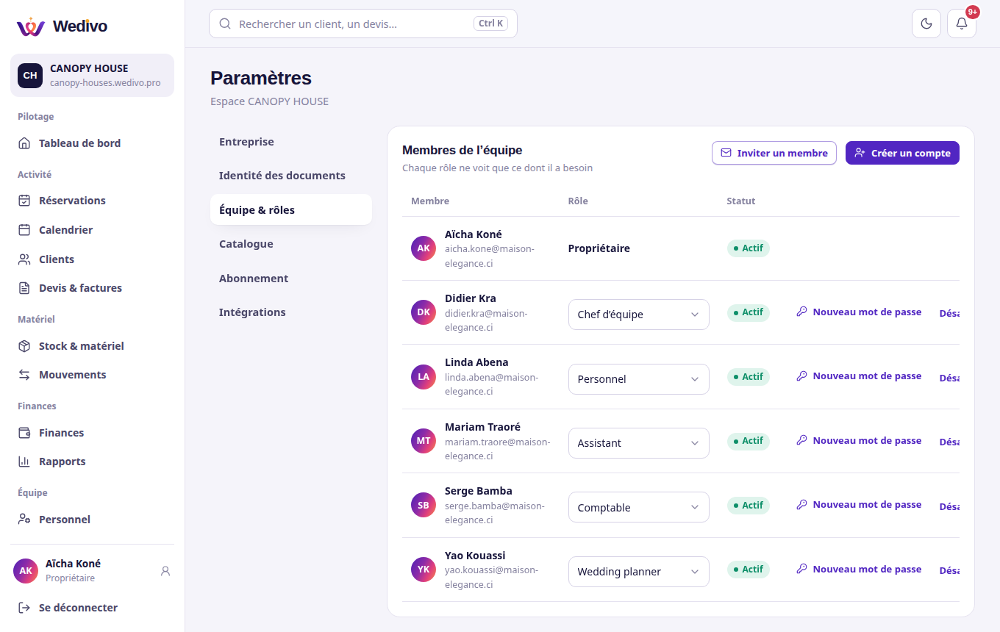
Paramètres › Équipe.
Abonnement et intégrations
Abonnement : toutes les fonctionnalités sont incluses, sans moyen de paiement ; les abonnements arriveront avec une prochaine mise à jour. Intégrations : les services reliés à votre espace (email aujourd’hui, d’autres à venir).
Réservée à l’équipe Wedivo, la console donne la vue sur toute la plateforme : toutes les agences et tous les comptes. Elle s’ouvre sur /plateforme ; un super-administrateur qui travaille aussi dans une agence y accède par le lien « Console plateforme » en bas du menu.
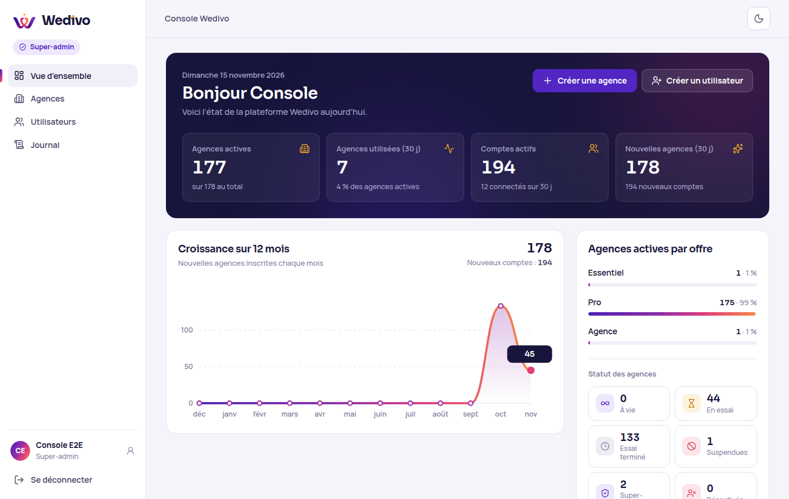
La vue d’ensemble de la plateforme.
Vue d’ensemble
Agences actives, agences réellement utilisées sur 30 jours, comptes actifs, nouvelles inscriptions, croissance sur 12 mois, répartition par offre, statut des agences, liste « À surveiller » (essais qui se terminent, agences suspendues) et activité récente.
Agences
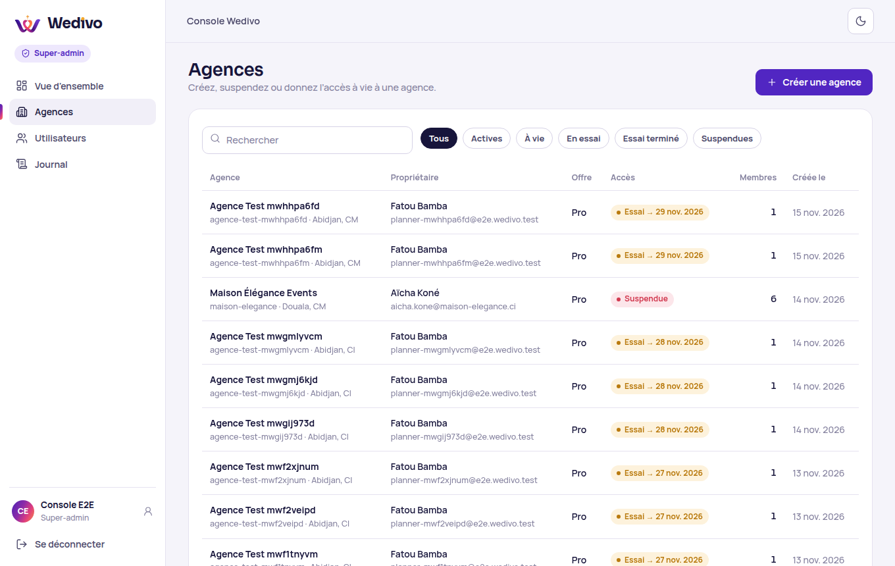
Toutes les agences, avec filtres.
Créer une agence pour un client, avec son propriétaire et un mot de passe provisoire.
Dans la fiche d’une agence : accès à vie (Wedivo pour toujours, sans fin d’essai), suspension avec un motif (plus personne n’entre, les données sont gardées) puis réactivation, offre, fin d’essai, note interne jamais montrée à l’agence, et les membres avec leurs rôles.
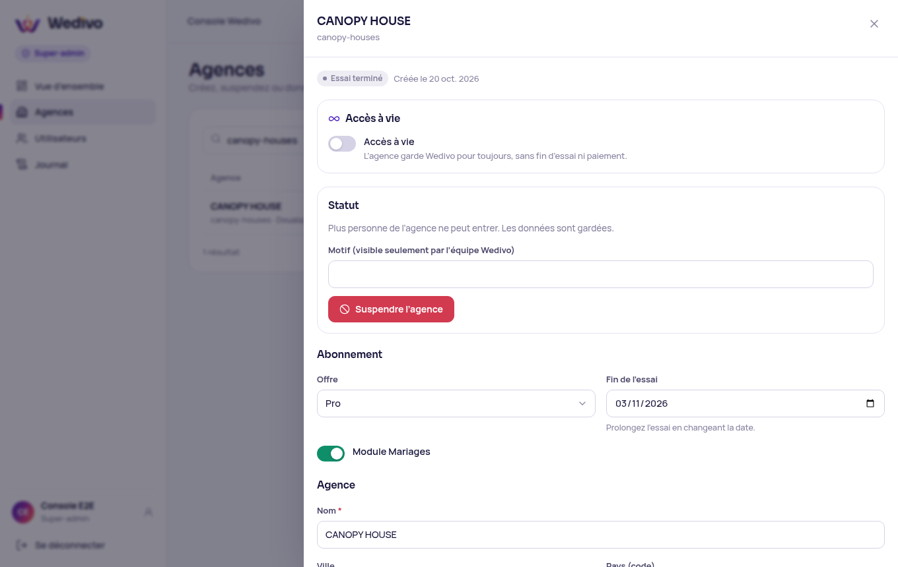
La fiche d’une agence dans la console.
Utilisateurs et journal
Utilisateurs : tous les comptes, toutes agences confondues. Créer un compte, le désactiver (il ne peut plus se connecter nulle part), donner ou retirer l’accès super-administrateur, donner un mot de passe provisoire, ajouter la personne à une agence avec un rôle.
Journal : chaque action faite depuis la console, avec son auteur et la date.
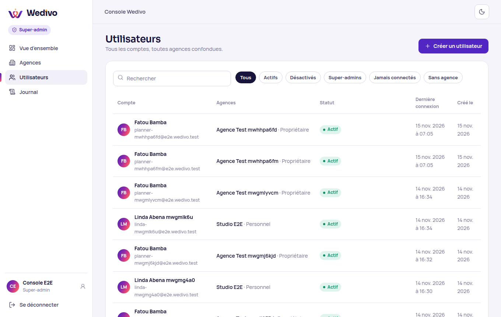
Tous les comptes de la plateforme.
SécuritéOn ne peut ni désactiver son propre compte ni se retirer ses droits. Une agence garde toujours un propriétaire : en nommer un nouveau fait passer l’ancien en wedding planner.
CHAPITRE 16Questions fréquentes et dépannage
Je suis renvoyé sans cesse à la page de connexion.
Vérifiez que l’adresse du site commence par https://. Évitez aussi d’ouvrir deux comptes différents dans le même navigateur : la seconde connexion remplace la première. Utilisez une fenêtre de navigation privée ou un autre navigateur pour le second compte.
Wedivo me demande de changer mon mot de passe avant tout.
Votre compte a été créé avec un mot de passe provisoire. Saisissez-le dans « Mot de passe provisoire », choisissez le vôtre, confirmez : le reste de l’application s’ouvre aussitôt.
Le message « Vous n’avez pas accès à cet espace » apparaît.
Votre compte n’est pas (ou plus) membre de l’agence ouverte, ou l’agence a été suspendue. Demandez au propriétaire de vérifier votre accès dans Paramètres › Équipe.
« Votre rôle ne permet pas cette action ».
L’action est réservée à d’autres rôles (voir l’annexe). Demandez au propriétaire de changer votre rôle si nécessaire.
Ma photo ne s’envoie pas.
Wedivo allège automatiquement les photos avant l’envoi. Si une photo d’iPhone est refusée, choisissez-la depuis Safari, ou réglez l’iPhone sur Réglages › Appareil photo › Formats › « Le plus compatible ».
La réservation ne se confirme pas : « Stock insuffisant ».
Une autre réservation occupe déjà ce matériel sur ces dates. Réduisez la quantité, choisissez un article équivalent proposé, ou complétez chez un partenaire depuis la fiche de la réservation.
Je ne vois pas les montants.
C’est normal pour les rôles assistant, magasinier, chef d’équipe et personnel : les montants ne leur sont jamais envoyés.
J’ai supprimé ou archivé quelque chose par erreur.
Un client archivé se retrouve avec « Afficher les archives ». Un mouvement de stock s’annule depuis le journal. Une personne du personnel ayant déjà travaillé n’est jamais effacée : elle est seulement retirée des listes.
ANNEXEQui peut faire quoi
Domaine
Propriétaire
Planner
Assistant
Comptable
Magasinier
Chef d’équipe
Personnel
Clients et devis
Oui
Oui
Oui
Lecture
—
—
—
Réservations
Oui
Oui
Lecture
Lecture
Logistique
—
—
Stock et mouvements
Oui
Lecture
Lecture
Lecture
Oui, sans prix
—
—
Prix des partenaires
Oui
—
—
Oui
—
—
—
Paiements et encaissements
Oui
Soldes
—
Oui
—
—
—
Marges, dépenses, rapports
Oui
—
—
Oui
—
—
—
Personnel et planning
Oui
Oui
Lecture
Lecture
—
Son équipe
—
Paie
Oui
—
—
Oui
—
—
—
Mes missions et pointage
—
—
—
—
—
Oui
Oui
Mariages, partenaires, fournisseurs
Oui
Oui
Oui
Lecture
—
—
—
Équipe, paramètres, import du matériel
Oui
—
—
—
—
—
—
Une question qui n’est pas dans ce manuel ? Contactez l’équipe Wedivo depuis l’application ou par WhatsApp.